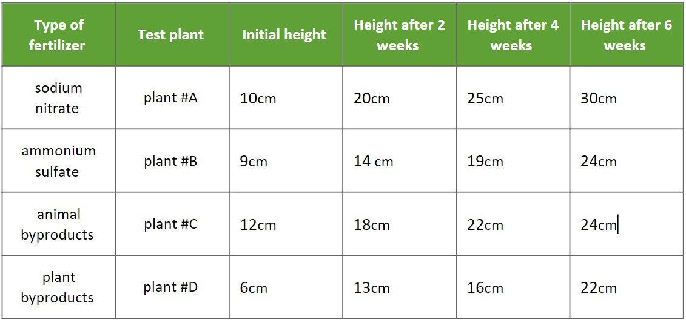
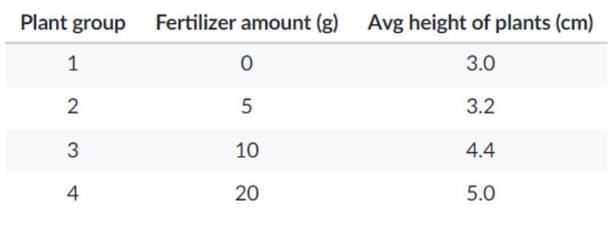

Question 1
Plant Fertilizer Experiment
Question 2
A biology student wanted to study the effect of fertilizer on the growth of tomato plants. He placed four of the same type of tomato plants into separate containers, each containing the same amount of soil. Each pot received a different watering solution, containing varying amounts of fertilizer.
The table below shows the average height of the plants by the end of one week.
Question 3
A student hypothesizes that eating a teaspoon of raw honey will prevent sneezing in people who are allergic to pollen. She runs an experiment to test her hypothesis.
Question 4
A student wanted to test how the mass of a paper airplane affected the distance it would fly. Paper clips were added before each test flight. As each paper clip was added, the plane was tested to determine how far it would fly. The experiment was repeated five times.
Question 5
Smithers thinks that a special juice will increase the productivity of workers. He creates two groups of 50 workers each and assigns each group the same task (in this case, they're supposed to staple a set of papers). Group A is given the special juice to drink while they work. Group B is not given the special juice. After an hour, Smithers counts how many stacks of papers each group has made. Group A made 1,587 stacks, Group B made 2,113 stacks.
1. Choose the set of words that best completes the following sentences:
In the fertilizer growth experiment, the type of fertilizer used functions as the _____ variable.
In the fertilizer growth experiment, the growth rate of the plants functions as the _____ variable.
2. What is the independent variable in this experiment?
3. What is the dependent variable?
4. Choose the correct control group for this experiment.
5. What is the dependent variable?